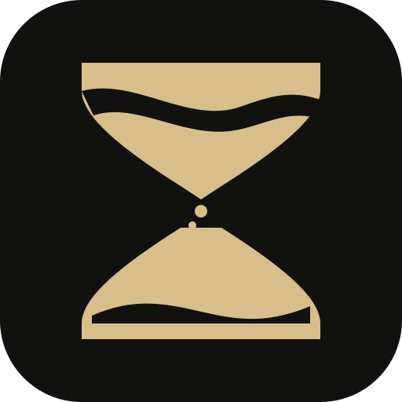

Set the scope
Define the goal and asset boundaries. Choose the model profiles, tools, and review rules for the task.

BLACKSANDSELF-HOSTED · AGENTIC SECURITY RESEARCH
A workspace for security research that connects the plan, the agents, and the proof. Your models. Your tools. Your infrastructure.
GO + NEXT.JS / SQLITE OR POSTGRESQL / LOCAL OR E2B
FROM OBJECTIVE TO OBSERVATION
Blacksand turns an objective into a reviewable workflow. A planner creates work intents. Workers use your tools. Findings and evidence become part of the task’s persistent knowledge, ready for review and the next decision.
Define the goal and asset boundaries. Choose the model profiles, tools, and review rules for the task.
Inspect the planner’s intents, concurrent workers, conversations, approvals, and tool activity.
Keep findings, HTTP evidence bindings, reports, and retests together. Check the evidence before trusting a conclusion.
Anthropic, OpenAI Chat Completions, and OpenAI Responses profiles. MCP servers, reusable skills, and an external agent adapter.
Shared asset scope and task exploration graphs, backed by PostgreSQL or SQLite. Local execution or supported tool operations in E2B.
YOUR MACHINE. YOUR WORKSPACE.
Use Go 1.26.3 and Node.js 22 or newer. A model provider is needed when you start agents.
Full setup guidegit clone https://github.com/arzumanabbasov/blacksand.git
cd blacksand
npm ci --prefix web
# Terminal 1: start the backend
BLACKSAND_DB_DRIVER=sqlite go run ./cmd/blacksand
# Terminal 2: start the interface
npm run dev --prefix webTHE FIELD JOURNAL
The track record is where real runs, findings, demos, experiments, and useful failures get written up—with the setup, outcome, and verification attached.
The journal starts empty. Results belong here when there is something real to show.
Open the track recordUse controlled environments and targets you have permission to assess. Model output requires review. Local tools and remote sandboxes have different boundaries; inspect the workflow and the evidence.